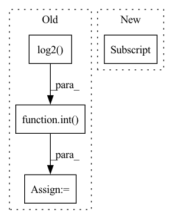

Pattern ID :29686

Before Change
def mix(ctx: Context, inp: jnp.ndarray) -> jnp.ndarray:
original_shape = inp.shape
items = math.ceil(math.log(ctx.dims.sequence, ctx.dims.spatial_mixing_kernel))
samples = 2 ** (int(math.log2(ctx.dims.sequence)) // items)
inp = inp.reshape(ctx.dims.batch, -1, ctx.dims.spatial_mixing_kernel, ctx.dims.features)
inp = inp.transpose(0, 3, 1, 2)
shape = [ctx.dims.batch, ctx.dims.features, -1, samples ** (items - 1)]
After Change
inp = inp.transpose(0, 3, 1, 2)
shape = inp.shape
transposed_shape = list(shape)
transposed_shape[3], transposed_shape[2] = transposed_shape[2], transposed_shape[3]
for i, wgt in enumerate(weights):
wgt = wgt * mask
if i != 0:
In pattern: SUPERPATTERN
Frequency: 3
Non-data size: 4
Instances
Fragment ID: 88021807
Project Name: homebrewnlp/homebrewnlp-jax
Commit Name: bfe53eb59aee047d89cd71559ff88ff3db2ff840
Time: 2022-08-31
Author: 39779310+ClashLuke@users.noreply.github.com
File Name: src/model/mixer.py
M Class Name: AnonimousClass
N Class Name: AnonimousClass
M Method Name: mix(2)
N Method Name: mix(2)
M Parent Class:
N Parent Class:
M File Name: src/model/mixer.py
N File Name: src/model/mixer.py
M Start Line: 15
M End Line: 31
N Start Line: 15
N End Line: 36
'>
Before Change
remaining_edge_types = unique_edge_type.copy()
// Estimate by "coupon collector"
maximal_reasonable_steps = 10 * edge_type_num * \
int(math.log2(edge_type_num)+1)
step_cnt = 0
for _ in range(edge_type_num):
while True:
After Change
break
// Move edge types from candidate_edge_types_list to chosen_edge_types_list.
new_edge_type_idx = random.randint(0, len(candidate_edge_types_list)-1)
new_edge_type = candidate_edge_types_list[new_edge_type_idx]
chosen_edge_types_list.append(new_edge_type)
candidate_edge_types_list.pop(new_edge_type_idx)
explored_node_type_set |= set(EdgeTypeStr2Tuple(new_edge_type))
'>
Fragment ID: 88021805
Project Name: pku-dair/sgl
Commit Name: 93e7aac75c7a5fe5266c08615e4e5c0de463a86d
Time: 2022-04-21
Author: 82886739+ZhenbangYou@users.noreply.github.com
File Name: dataset/choose_edge_type.py
M Class Name: AnonimousClass
N Class Name: AnonimousClass
M Method Name: ChooseEdgeType(3)
N Method Name: ChooseEdgeType(3)
M Parent Class:
N Parent Class:
M File Name: dataset/choose_edge_type.py
N File Name: dataset/choose_edge_type.py
M Start Line: 29
M End Line: 56
N Start Line: 31
N End Line: 62
'>
Before Change
head_conv = 64
self.deconv_with_bias = False
self.down_ratio = down_ratio
self.first_level = int(np.log2(down_ratio))
resnet = torch.hub.load("pytorch/vision:v0.6.0", base_name, pretrained=pretrained)
self.base = torch.nn.Sequential(*(list(resnet.children())[:-2]))
if freeze_base:
After Change
base_name = f"resnet{num_layers}"
head_conv = 64
self.inplanes = RESNET_MODELS[num_layers]
self.deconv_with_bias = False
self.down_ratio = 4
resnet = torch.hub.load("pytorch/vision:v0.6.0", base_name, pretrained=pretrained)
// skip remove pooling and fc layer from resnet
'>
Fragment ID: 88021811
Project Name: scheckmedia/centernet-uda
Commit Name: e16027f2ba70a905bb502c18accc85008d91b944
Time: 2020-08-12
Author: tobias.scheck@etit.tu-chemnitz.de
File Name: backends/resnet.py
M Class Name: CenterResNet
N Class Name: CenterResNet
M Method Name: __init__(5)
N Method Name: __init__(6)
M Parent Class: nn.Module
N Parent Class: nn.Module
M File Name: backends/resnet.py
N File Name: backends/resnet.py
M Start Line: 7
M End Line: 16
N Start Line: 18
N End Line: 23